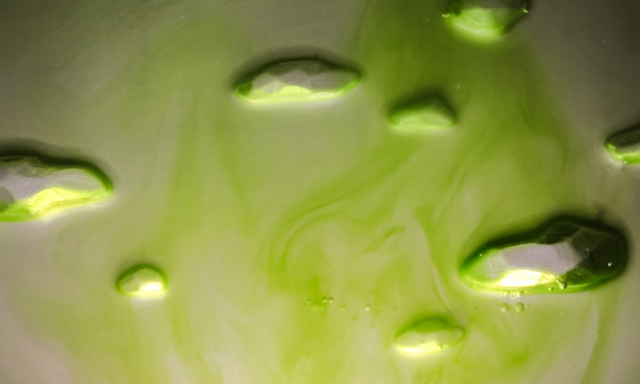

Jade Flow is an original lighting collection, a fusion of design, art and organism. It presents an oriental aesthetic from the perspective of life science, merging the behavior of human and the instinct of creatures.
Jade Flow is an original lighting collection, a fusion of design, art and organism. It presents an oriental aesthetic from the perspective of life science, merging the behavior of human and the instinct of creatures.
Due to phototaxis, the movement toward light, the algae in the water composes different shades of green that resemble the classical texture of jade. With this idea, we attempt to merge oriental elements into the design.
MOUNTAIN
Different contours of mountains create a layered-shape background, which leads the algae to crest and form the image of clouds and mists in the mountains.
WATERFALL
Several small stone-shaped blocks are placed in the middle of the vessel. The algae will be obstructed and guided to both flanks to approach the light, mimicking the effect of a waterfall.
The base is composed of two transparent pieces of acrylic, with an Led light embedded inside. Between the interval, rays of light attract the algae in the darkness. With great simplicity, the algae's behavior due to phototaxis is clearly presented.

The embossments of the mountain and stones lead the algae to compose Chinese landscape paintings. With beams of light, the image conveys the natural beauty of the life form.
 The vessel is a disc-shaped piece with solid cambered surface to emphasize the dynamic flow of the algae and show the sense of full.
The vessel is a disc-shaped piece with solid cambered surface to emphasize the dynamic flow of the algae and show the sense of full.
Each part of the design can be assembled with ease. The whole formation is fixed and supported by a compact stainless-steel structure.
To embark on our design, we cooperated with National Taiwan University Institute of Fisheries Science, Dr. Hong-Nong Chou Lab. We compared different types of the algae to find the appropriate one. Through a series of laboratory tests, Haematcoccus Pluvialis showed the most remarkable response toward light.
Haematcoccus Pluvialis
A freshwater species of Chlorophyta from the family Haematococcaceae. This species is well known for its high content of the strong antioxidant astaxanthin, which is important in aquaculture, and cosmetics.Haematococcus Pluvialis is usually found in temperate regions around the world. It requires a pH neutral environment and be kept free of contamination by unwanted algae, fungi and protozoa.
With the beating of the cilia, Haematococcus Pluvialis show positive phototaxis, resulting in the flow in the brighter area of the water. Slightly yet unceasingly it moves.
Abundant experiments were devised regarding Haematococcus Pluvialis’s habits to generate the most outstanding effect. We measured the influence of different factors on the algae, such as lighting type and intensity, vessel shape and size, as well as gravity and temperature.


The experiements showed that the conditions for producing the most conspicuous phototaxic effect of Haematococcus pluvialis was while being housed in a standing thin plate with the light placed beneath.

Based on the outcome of the previous experiements, we adapted the disc-shaped and begun designing the embossement of the vessel to channel the phototaxic movement.
SHARE IDEAS WITH US.